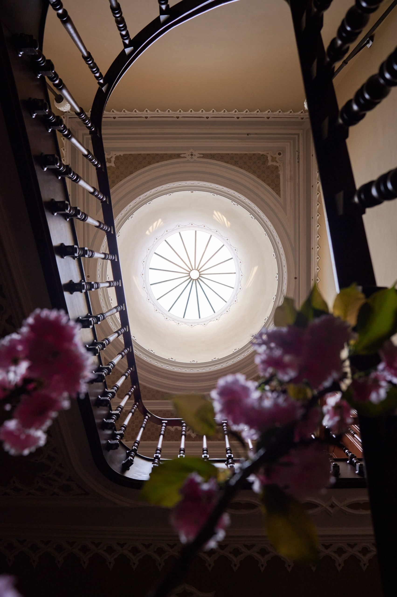
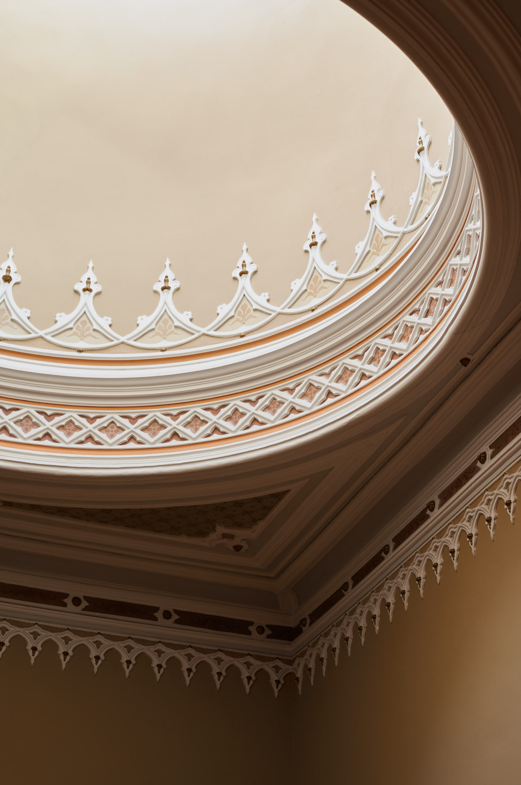
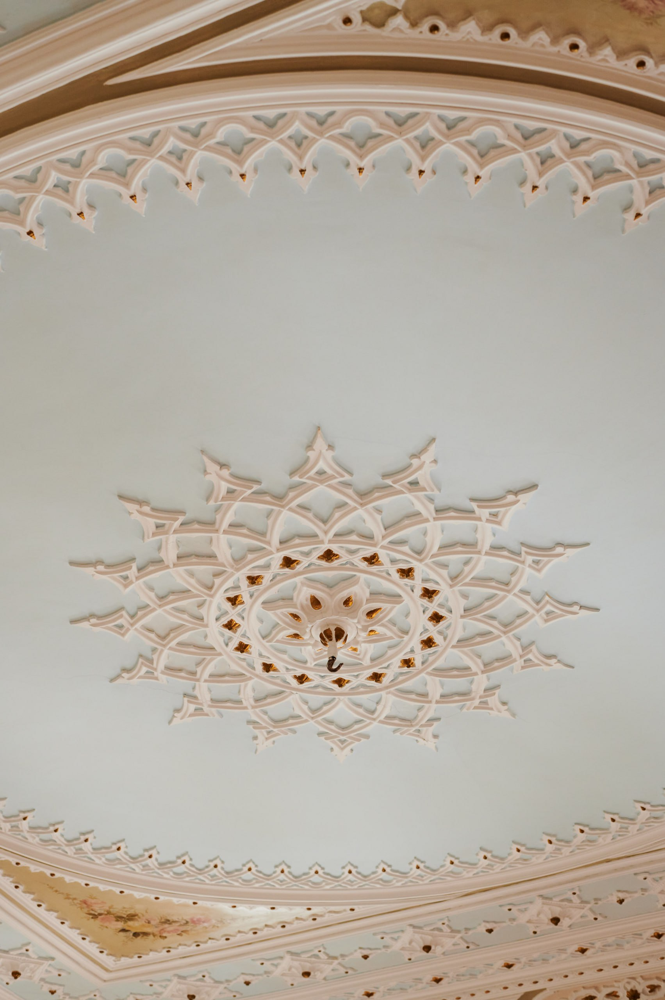
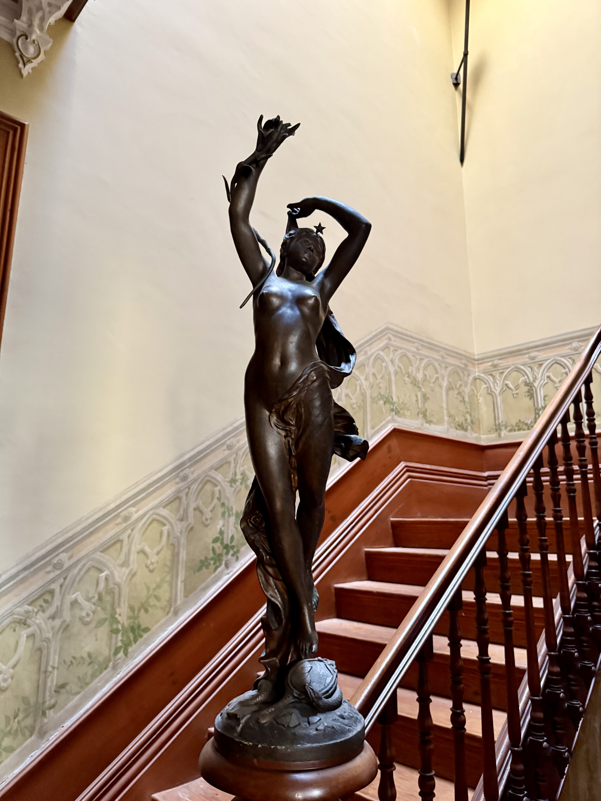
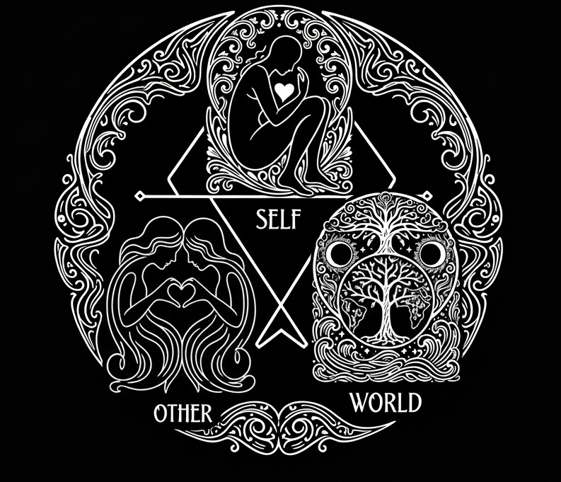
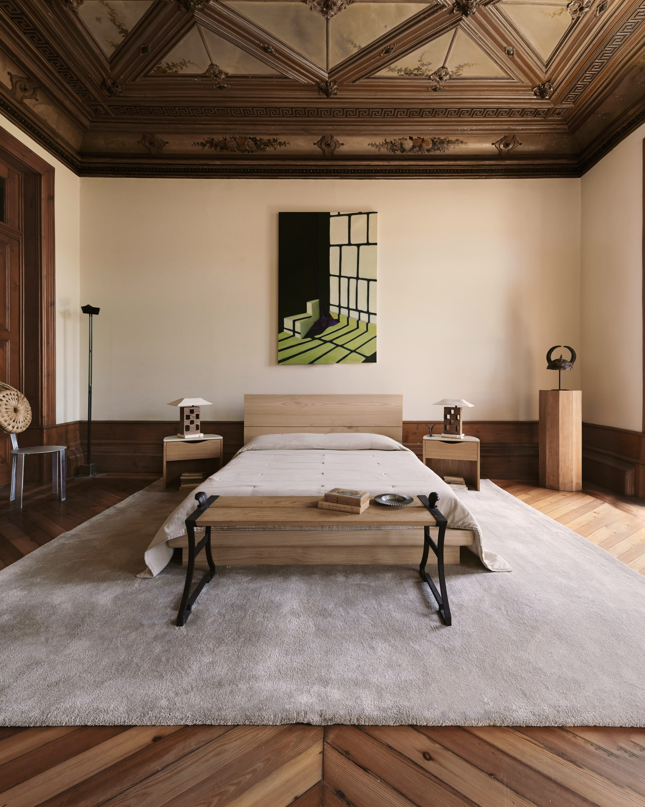
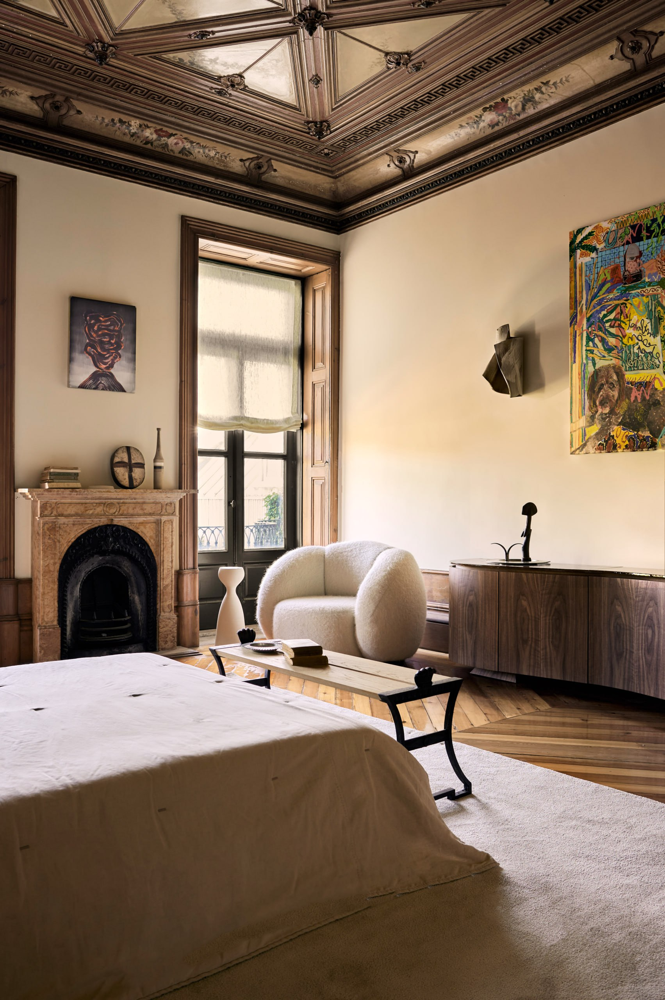
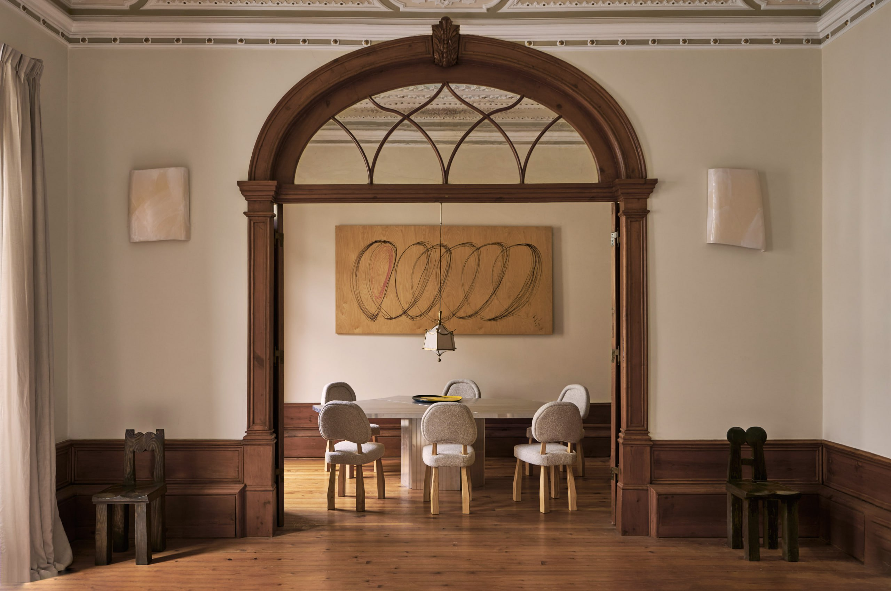

THE HOUSE OF HYPERSTITION
The House is here to build the next layer of cultural infrastructure
artist residency
hacker monastery
urban sanctuary
Built to attract & connect independent minds in
FOR INFINITE PLAYERS
&
SOVEREIGN AGENTS
Those who take responsibility and build culture, not just consume it
A setting where exceptional individuals can create & become in ways that expand what's possible
We bring them together to prototype the future at human scale:
through art, technology, ritual, and embodied living
WHY HERE & WHY NOW
The global creative-intellectual underground has shifted from events to ecosystems
From conferences & festivals to residencies & longer-term living projects like
This network of is seeking spaces that blend intellectual depth, aesthetic refinement, and bodily renewal
Portugal, and Porto in particular, has become a magnet for this migration
Yet what's missing is an anchor – a home that cultivates coherence rather than transience
That's what The House provides.
HISTORIC ARTS DISTRICT
PORTO
A nexus for digital nomads, regenerative founders, and crosscultural artists


THE SPACE






WE DESIGN FOR EMERGENCE, NOT CONTROL


WE INCUBATE IDEAS, CULTURE, AND PEOPLE
A model of helping

SPACES FOR BECOMING
Mid-term coliving
1–6 months for artists, researchers, and founders
Coworking & deep work zones
Designed for focus and flow – quiet, plant-filled, light-rich, nervous-system friendly
Creation spaces
Studio for art, sound, and textiles; workshop area; event-ready common room
Bodymind integration
Gym and a yoga / meditation room to support daily movement, strength, and stillness
The Social Spa
Sauna, cold plunge, , and tea house tent – a wellness and gathering hub
Community programming
Salons, small performances, residencies, incubation labs, and workshops


